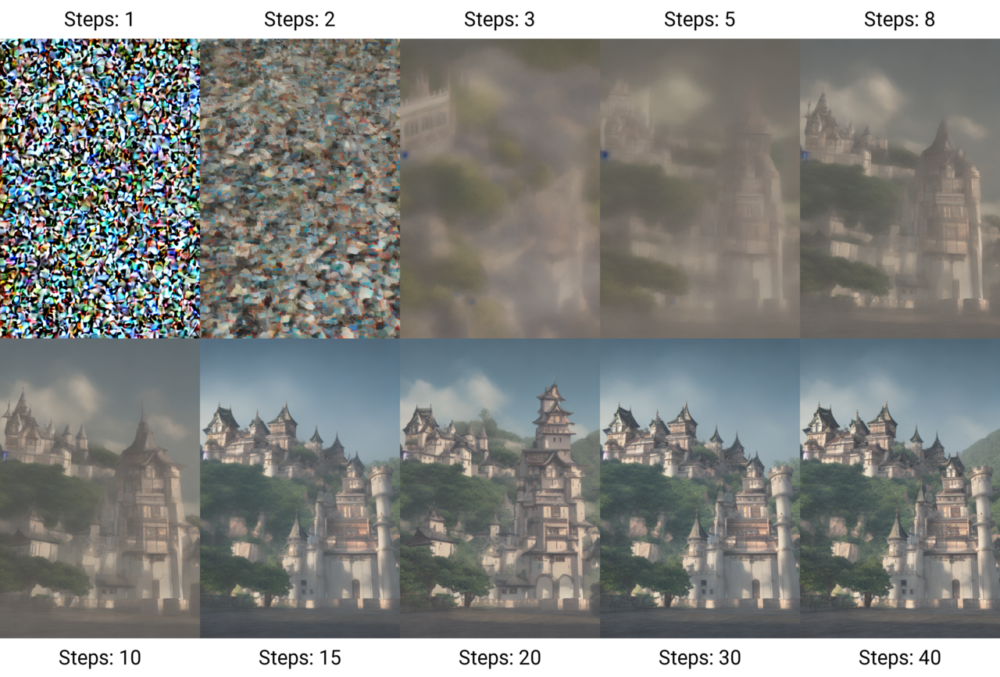

Generative AI
When Machines Create Text, Images and Music
Could you tell if a song was made by a human or by an AI? In a survey made for the streaming service Deezer, 97% of the listeners couldn't.
A New Kind of AI
In The AI Family Tree we saw that generative AI is the kind of AI that creates new content instead of only recognizing it. This article looks at what it actually creates today, and at the problems that come with it.
What is often a surprise is how many people already use it. By February 2026 ChatGPT had 900 million users every week, and Switzerland is no exception: in 2025, 47% of people here had already used generative AI tools, way above the EU average of about 33%.
Text
For most people generative AI means a chatbot such as ChatGPT, Gemini or Claude. You write a question and it writes back an answer. People use them nowadays to write emails, to summarize long articles, to translate and to study. Students were among the first to try them: by the end of 2024, 26% of American teenagers had used ChatGPT for schoolwork, double compared to the year before. How a chatbot actually builds its answers is explained in the "How Does AI Work?" part of this website.
Images and Video
With images it works in a similar way. You describe a picture in one sentence (for example "a castle in the mountains at sunset") and an image generator draws it. The picture is not taken from somewhere on the internet: the generator starts from random noise and cleans it step by step until an image appears, like in the picture below.

Video arrived quickly too, and in at least one case it also disappeared just as quickly. OpenAI released its video generator Sora in December 2024 and launched a second version, with its own app, in September 2025. Only six months later it announced: "We're saying goodbye to Sora."
Music
Let's go back to the songs from the beginning. According to Deezer, in 2026 44% of all the tracks uploaded every day on the platform are made by AI, almost 75,000 a day. Yet they are only 1-3% of what people actually listen to.
The music industry didn't stay still. In 2024 the big record labels sued the AI music apps Suno and Udio, saying that they copied songs to build systems that would "directly compete with, cheapen, and ultimately drown out" human artists. By the end of 2025 several labels had settled, and the apps agreed to launch licensed versions in 2026.
Two Big Problems
The first problem is fakes. To understand how serious it can be, let's take an example. In 2024 an employee of the engineering company Arup in Hong Kong joined a video call with the company's finance director and some colleagues. Everything looked normal, but all of them were deepfakes. The employee made 15 transfers worth about 25 million US dollars before anyone noticed. That is why, since August 2026, the EU's AI Act requires AI-generated content to be marked in a way that machines can detect, and deepfakes have to be disclosed.
The second problem is ownership. Generative AI learns from millions of books, articles, pictures and songs, and their creators were never asked. The New York Times sued OpenAI in 2023 and the case is still open. In 2025 Anthropic agreed to pay 1.5 billion dollars to authors, about 3,000 dollars per book, the biggest copyright settlement ever. In the UK, on the other hand, Getty Images lost its main case against Stability AI, because the court found that the model doesn't store copies of Getty's images. So the rules are still being written.
Generative AI can turn anyone into a writer, a designer or a composer, but it can also make anything look real. This is exactly why the next article is about using it well.